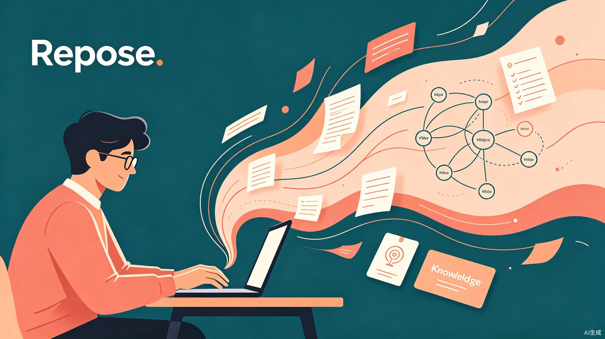
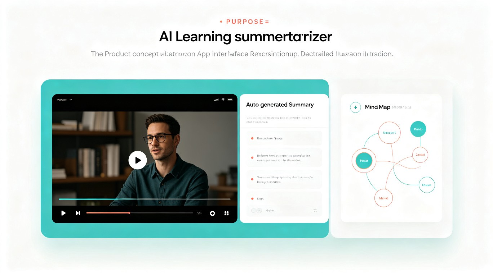

AI 驱动的长音视频学习总结与个性化知识库工具
智汇声影——AI 长音视频学习总结与知识库工具
在学习长视频课程或长音频内容时，用户难以快速定位核心知识点，回顾内容需要反复拖动进度条；学习后的笔记散落在各处，无法形成体系化的个人知识库，导致学习效率低下、知识遗忘快。
作为一名重度在线学习者，我在观看 B 站技术教程、Coursera 课程和听播客时，经常遇到这样的困扰：一段 2 小时的课程，复习时却要重新看完整段视频才能找到当初的重点；手写的笔记和截图分散在备忘录、相册和云文档中，复习时难以串联。我希望能有一个工具，像一位智能学习助理，帮我把冗长的音视频内容自动提炼成结构化知识，并长久沉淀为可随时检索的个人知识库。
一款 Web 应用 + 浏览器插件，支持上传或粘贴视频/音频链接，AI 自动转录并生成章节化总结、思维导图、知识卡片，同时自动构建可搜索、可关联的个性化知识库。
AI 自动识别内容结构，按主题切分章节
自动生成摘要、要点、思维导图
自动识别概念关联，构建知识图谱
用自然语言搜索知识库中的任意内容
核心用户群体包括：大学生与考研党（需要系统学习网课）、职场技能学习者（通过视频教程学习新技术）、终身学习者（订阅大量知识类播客和讲座）、以及研究者（需要整理大量访谈录音和学术报告）。
用户会在以下场景使用「智汇声影」：观看完 1-3 小时的技术教程后，需要快速回顾核心代码和原理；听完一期 90 分钟的知识播客后，想保存其中的洞见和金句；备考复习阶段，需要在海量课程视频中快速定位某个 forgotten 知识点；项目复盘时，需要调取之前学习过的相关内容进行交叉验证。
如果没有「智汇声影」，用户现在只能：手动暂停视频抄写笔记，打断学习节奏；反复拖动进度条寻找某个记得不牢的知识点；笔记与视频时间点脱节，看到文字想不起当时的讲解语境；不同课程的笔记相互孤立，无法发现跨学科的知识关联；最终导致学了就忘、忘了再学的低效循环。

商业价值角度：「智汇声影」面向快速增长的知识付费与在线学习市场，可采用「基础功能免费 + 高级功能订阅」的 SaaS 模式盈利，潜在用户规模达数千万级别。
社会价值角度：在信息爆炸的时代，优质长内容被淹没在海量短视频中。本工具帮助用户高效吸收深度知识，对抗碎片化阅读带来的思维浅层化，真正促进学习型社会的建设。
flowchart LR
A[粘贴视频/音频链接
或上传本地文件] --> B[AI 语音识别转录]
B --> C[智能内容分析
章节拆分]
C --> D[自动生成
摘要 & 思维导图]
D --> E[存入个人
知识库]
E --> F[语义搜索
知识关联]
style A fill:#ccfbf1,stroke:#0d9488,stroke-width:2px,color:#1c1917
style B fill:#f5f5f4,stroke:#78716c,stroke-width:1px,color:#1c1917
style C fill:#f5f5f4,stroke:#78716c,stroke-width:1px,color:#1c1917
style D fill:#f5f5f4,stroke:#78716c,stroke-width:1px,color:#1c1917
style E fill:#ffedd5,stroke:#f97316,stroke-width:2px,color:#1c1917
style F fill:#ccfbf1,stroke:#0d9488,stroke-width:2px,color:#1c1917